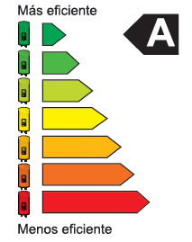

Calculadora
Con respecto a la calculadora, lo unico que debes hacer es introducir
el consumo en watts de tu aparato, y la cantidad de horas que lo usas,
el resultado es el consumo en Kw/H, y cuanto debes pagar al mes por
ese uso que le das.
La Etiqueta de Eficiencia

Los electrodomesticos, hoy en dia incluyen una etiqueta de control
de eficiencia, en la que se indica que tan eficente es tu aparato.
la clasificación va de la A hasta la G, y de más a menos eficiente
respectivamente. Lo más común hoy en día son los dispositivos de
clase A y B, pos estándar de fabricación.
Dispositivos Precargados
La página de dispositivos precargados ofrece la posibilidad de
visualizar el consumo, y cuanto cuesta por mes, en torno a
un tiempo de uso por mes mínimamente lógico, es decir que
el microondas no va a tener un tiempo de uso de 15hs mensual.
El Proyecto
El proyecto nació como una idea para ayudar a quienes quieren saber
cuanto deberán pagar al mes por usar sus electrodomésticos, o cuánto cunsumen
estos mismos. Sea por la razón que sea, además de que por una razón ambiental
buscamos dar consciencia del consumo eléctrico en nuestras casas, que aveces puede
ser excesivo; Usando el hecho de tener que pagar más como estrategia para que
la gente consuma la electricidad de manera responsable.
Es nuestro grano de arena. El proyecto en sí está orientado a la participación
en las olimpíadas de programación como estudiantes, pero va a ir incluído como
un proyecto en nuestros portafolios a la hora de encontrar trabajo.
Inicio/Cuentas
La finalidad de este apartado es, la futura implementacion de un sistema
para subir dispositivos, a una base de datos la cual ya dispone de un espacio
para ello, pero no se ha llevado a cabo la implementacion del sistema. Por
lo que la funcion de las cuentas, solo es acceder al programa en si.